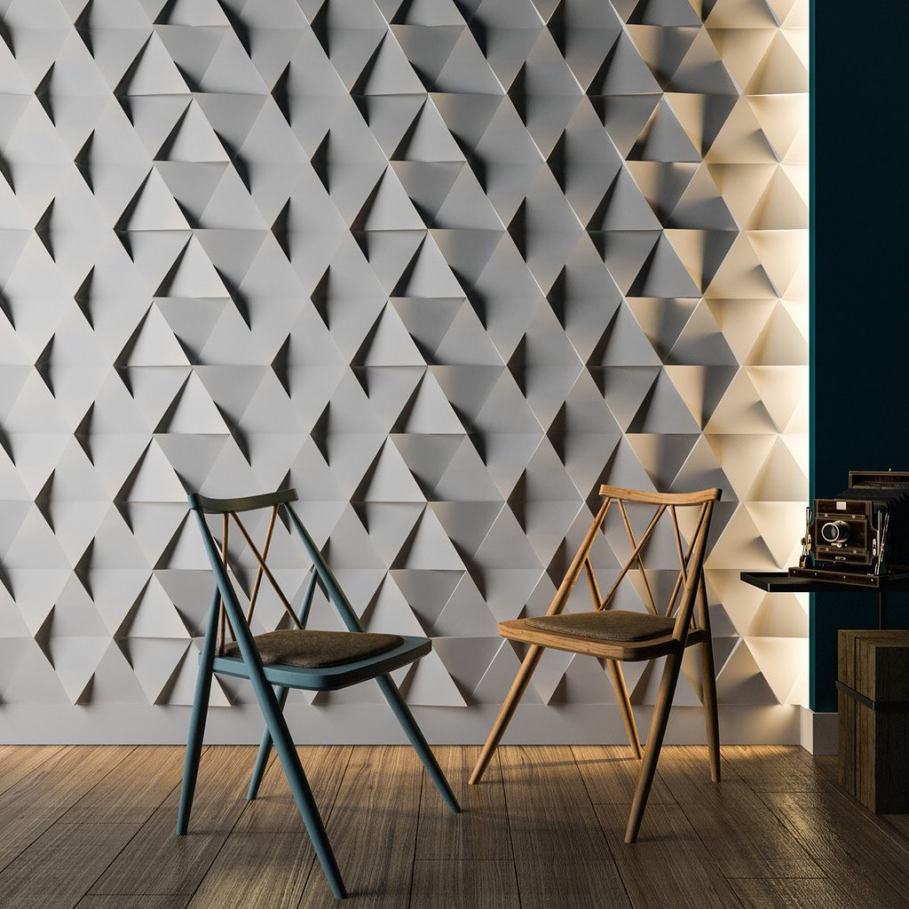

Наша кухня!
1
French cheese soup
Cheese soup with chicken is a great solution for a tasty and hearty lunch. The soup is very appetizing. Hochland melted cheese for hot dishes dissolves perfectly in the soup and gives the dish the most delicate creamy taste.

2
Meat in French with potatoes, tomatoes and cheese
Meat in French is a dish with a lot of advantages. It cooks quickly, looks appetizing and always turns out. You can cook it not only for everyday lunches or dinners, but also for a festive table. Options for cooking meat in French include a different order of layers of ingredients and the degree of their readiness when baked. Today we will cook meat in French with potatoes and tomatoes. It's very juicy and delicious!

3
French cream croissants
Delicate, crunchy creamy croissants - amazing for breakfast. Especially in the company of coffee with cream, and especially if they are made at home, following French traditions. We present you a step-by-step recipe - a visual aid for everyone who dreams of homemade croissants

4
Tartiflette
Tartiflette is a dish from Savoy in the French Alps and from the Aosta Valley. It is made with potatoes, reblochon cheese, lettuce and onions.

5
les crêpes
In general, French pancakes are considered to come from Brittany, but are popular everywhere: in every French city you can find Cpererie (Pancake) with an assortment of delicate thin pancakes.

